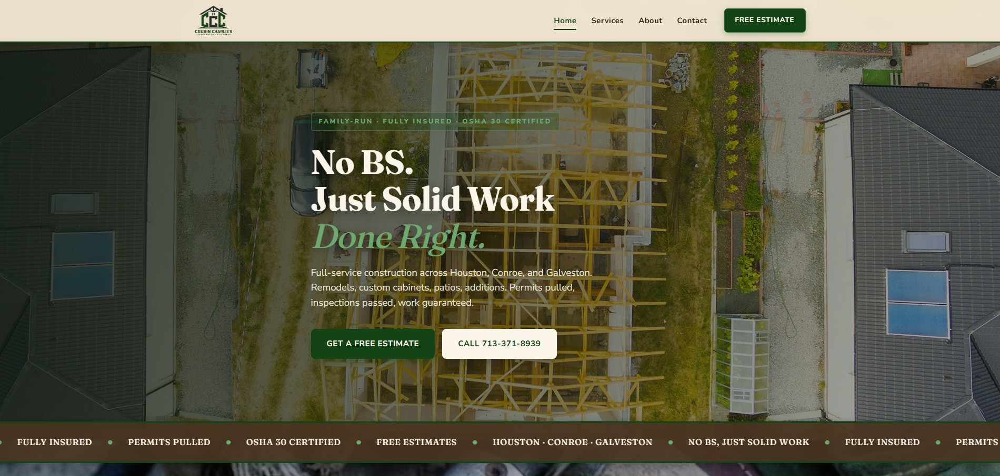
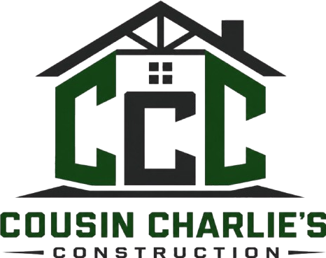
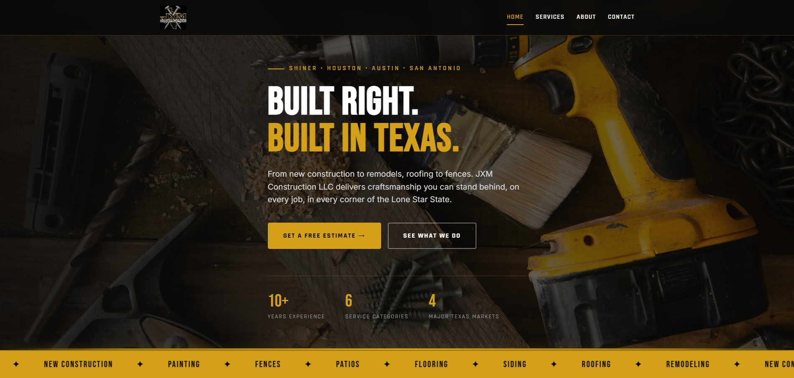

01
Construction & Trades
3 Projects

Contractor · Jacksonville, TX
Jones Home & Repairs
Full-service contracting site covering custom homes, remodels, pools, barns, and storm drainage. Includes services grid, project galleries, and a detailed quote form.
View Live Site

Construction · Texas
Cousin Charlie's Construction
Site for a full-service construction company focused on quality work and direct communication with clients. Clean build with services breakdown, completed work gallery, and a contact form optimized for quick estimates.
View Live Site
Construction · Texas
JXM Construction LLC
Professional site for a construction firm with a custom domain and full online presence. Clean design that communicates trust, with detailed services sections, project gallery, and a contact form that captures project details from first touch.
View Live Site